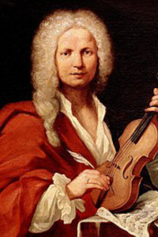
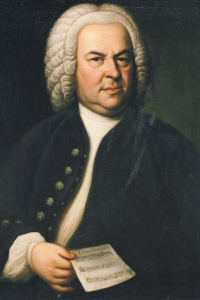
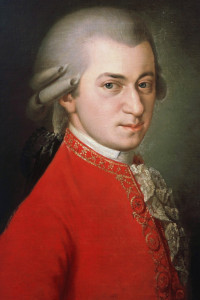
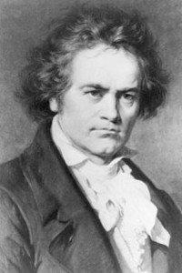
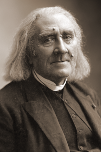
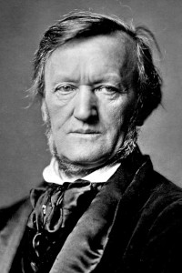
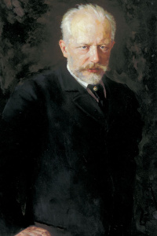

Antonio Vivaldi
1678 - 1741

Jan Sebastian Bach
1685 - 1750

Wolfgang Amadeus Mozart
1756 - 1791

Ludwig van Beethoven
1770 - 1827
Fryderyk Chopin
1810 - 1849

Ferenc Liszt
1811 - 1886

Richard Wagner
1813 - 1883

Piotr Czajkowski
1840 - 1893